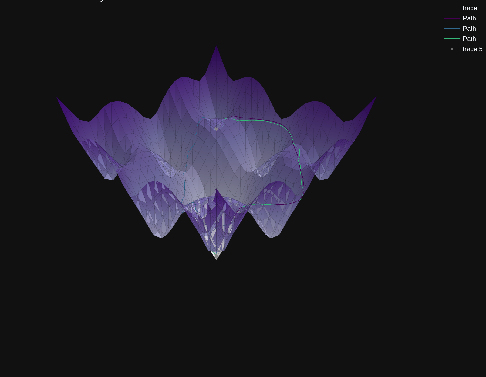
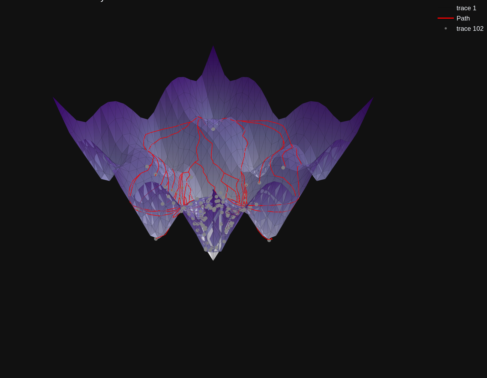

Geodesics
For a manifold \(\mathcal{M}\) a Riemmanian metric \(\rho=\left(\rho_x\right)_{x \in \mathcal{M}}\) is a smooth collection of inner products \(\rho_x: T_x \mathcal{M} \times T_x \mathcal{M} \rightarrow \mathbb{R}\) on the tangent space. Usually we can think about it as a collecion of matrices given by \(J_p^TJ_p\) where \(p\in\mathcal{M}\). This induces a metric that can be used to weight paths on the manifold. For a curve \(\gamma:[a, b] \rightarrow \mathcal{M}\) we define its length as:
A geodesic \(\gamma(t)\) on a manifold \(M\) with metric \(g\) is defined as a curve with zero tangential acceleration:
A second more loose definition sees the geodesic as the shortest path between two points on a curved surface or manifold, generalizing the concept of a straight line in Euclidean space. That is, geodesics are paths minimizing \(l(\gamma)\), fixed starting and end points \(a\), \(b\):
The geodesic distance is then defined similarly as:
Computation of geodesics
Computing geodesics is a central problem in differential geometry, geometric processing, and machine learning on manifolds. Several approaches exist, each with trade-offs:
- MMP (Mitchell–Mount–Papadimitriou) algorithm Computes exact geodesics on triangulated meshes. The only approximation is due to mesh discretization.
- PRO: highly accurate
-
CONS: restricted to triangulated 2D manifolds in \(\mathbb{R}^3\)
-
Graph-based methods Given samples from \(\mathcal{M}\), build a local connectivity graph (e.g. via KD-trees) and approximate geodesics by shortest paths in the graph.
- PRO: works in arbitrary dimensions; efficient
-
CONS: accuracy depends heavily on sampling density and neighborhood construction
-
Shooting methods (geodesic ODE integration) Solve the geodesic equation \(\nabla_{\dot{\gamma}} \dot{\gamma} = 0\) as an initial value problem: "shoot" from \(a\) with an initial velocity and adjust to reach \(b\).
- PRO: general-purpose, works in arbitrary dimensions
-
CONS: computationally expensive, sensitive to initialization
-
Heat method (Crane et al., 2013) Approximate geodesic distance by solving a short-time heat diffusion problem, followed by normalization of the gradient field. Geodesics can then be traced along the induced distance field.
- PRO: robust, scalable, works on meshes and point clouds
- CONS: gives approximate distances; requires solving PDEs numerically
MMP
In thefollowing we instantiate the GeodesicSolver class from jnlr.geodesics.compute. The method needs a triangulation of the function. We can pass a mesh specifying the mesh parameter (we can pre-compute one using the methods in jnlr.utils.meses) or by specifying the 2D range via tuples, and the number of points of the mesh. In this case the mesh is automatically computed by GeodesicSolver:
from jnlr.geodesics.compute import GeodesicSolver
from jnlr.utils.manifolds import f_ackley as f_expl
import jax.numpy as jnp
from jnlr.utils.plot_utils import plot_mesh_plotly
ranges = ((-1.3, 1.3), (-1.3, 1.3))
gs = GeodesicSolver(f_expl, n_samples=500, ranges=ranges)
[94m2026-01-14 15:41:17,072[96m INFO jnlr.geodesics.compute[95m: Mesh not provided. I'm building and storing a default mesh on the range ((-1.3, 1.3), (-1.3, 1.3)).
We can now compute the geodesic between two arbitrary points inside the range, and plot it using plot_mesh_plotly
x0 = jnp.array([-1, -1])
x1 = jnp.array([1, 1])
z0 = jnp.hstack([x0, f_expl(x0)])
z1 = jnp.hstack([x1, f_expl(x1)])
path, gdist = gs.geodesic(z0, z1)
plot_mesh_plotly(**gs.mesh, title="Geodesic on Ackley function", lines=path, points=[z0, z1], colorscale="Purples")
Graph geodesic
A faster method is the graph-based geodesics. When using a vanilla sampling, as done internally by GeodesicSolver when samples are not specified, it's not very accurate
gs_graph = GeodesicSolver(f_expl, n_samples=5000, ranges=ranges, method='graph')
path_graph, gdist_graph = gs_graph.geodesic(z0, z1)
plot_mesh_plotly(**gs.mesh, title="Geodesic on Ackley function", lines=path + path_graph, show_edges=True, points=[z0, z1])
[94m2026-01-14 15:41:17,569[96m INFO jnlr.geodesics.compute[95m: Samples not provided. I'm generating and storing default samples in the 0-1 hypercube.
A better result can be obtained by providing a non-trivial sampling of the manifold, e.g. a volume-based sampling via the sample function inside jnlr.utils.samplers. This sampling is a bit slower, but more representative of the manifold surface (and must be computed just once, as it's then stored in the class instance).
from jnlr.utils.samplers import sample
from jnlr.utils.plot_utils import plot_3d_projection
samples = sample(phi=f_expl, method='volume', n_samples=5000, bounds=ranges)
gs_graph_vv = GeodesicSolver(f_expl, samples=samples, ranges=ranges, method='graph')
path_graph_vv, gdist_graph_vv = gs_graph_vv.geodesic(z0, z1)
plot_3d_projection(samples, f_expl)

path_graph_vv, gdist = gs_graph_vv.geodesic(z0, z1)
plot_mesh_plotly(**gs.mesh, title="Geodesic on Ackley function", lines=path + path_graph + path_graph_vv, show_edges=True, points=[z0, z1])

print('geodesic distance \n exact {:0.2e}\n graph {:0.2e}\n graph volume sampled {:0.2e}\n'.format(gdist, gdist_graph, gdist_graph_vv))
geodesic distance
exact 5.70e+00
graph 6.33e+00
graph volume sampled 5.70e+00
Geodesic based scores
The GeodesicSolver class can be used to compute probabilistic scores on the manifold. One method is the pointcloud_distance . This method computes:
where \(\tilde{z}_i \in \mathcal{M}\) are atoms of a predictive distribution, \(z \in \mathcal{M}\) is the ground truth realization and \(d_g\) is the geodesic distance on \(\in \mathcal{M}\)
import jax
import numpy as np
# define an example of prediction starting from a ground truth z0 and perturbing its independent coordinates with a gaussian
n_samples = 100
perturbations = 0.3*jax.random.normal(jax.random.PRNGKey(0), (n_samples, 2)) + jnp.array([1.3, 1.3])
z_tilde = jnp.vstack([jnp.hstack([x0+pert, f_expl(x0+pert)]) for pert in perturbations])
# compute the point cloud geodesic distance
D_g = gs_graph_vv.pointcloud_distance(z_tilde, z0)
print('Pointcloud distance D_g {:0.3e}'.format(D_g[0]))
Pointcloud distance D_g 3.960e+00
We can retrieve all the geodesic paths by using the geodesic method as before, but this time repeating the destination point \(z\) for all the \(\tilde{z}_i\):
gamma_gs, _ = gs_graph_vv.geodesic(z_tilde, jnp.tile(z0, len(z_tilde)).reshape(-1, 3))
plot_mesh_plotly(**gs.mesh, title="Geodesic on Ackley function", lines=gamma_gs, show_edges=True, points=[z0] + [z_i for z_i in z_tilde], line_color='red')
